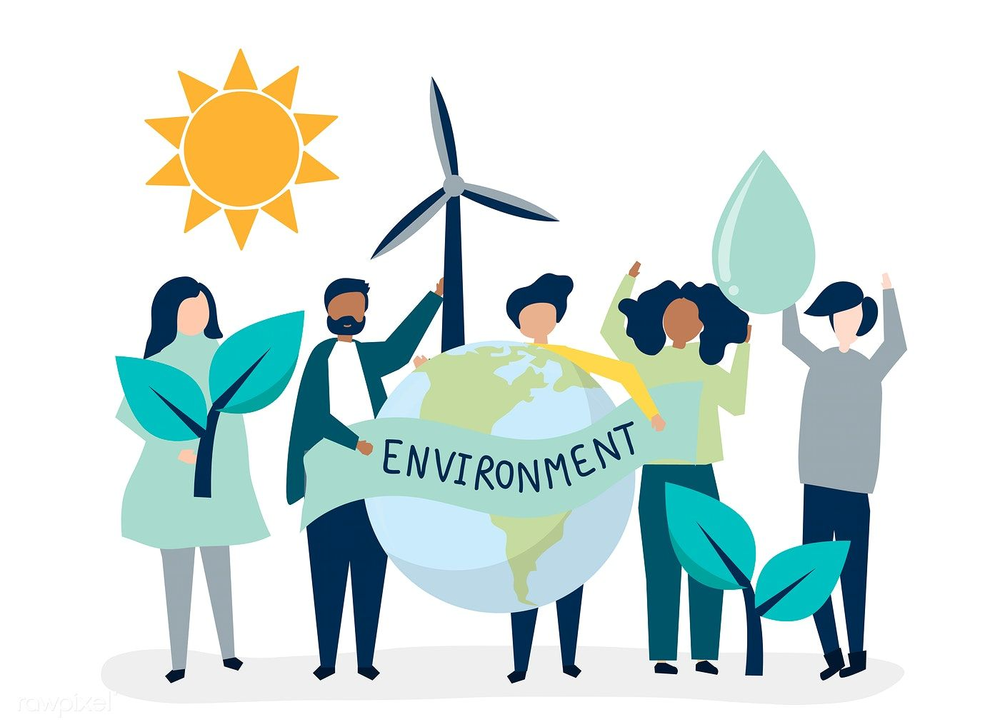

Land is a fundamental resource for dignified human living, primarily for safer dwelling in this era. It is required for developing a number of socio-economic sectors too, such as agriculture, forestry, irrigation, plantation, and industries, apart from the need for other large-scale physical infrastructures such as highways and powerplants. As we are aware, Environmental Impact Assessment (EIA) is one of the key assessments carried out in any of the feasibility studies for development projects. Engineers responsible for designing infrastructure development projects are one of the key stakeholders in the land use planning, which also make them as key decision makers in the sustainable use of land while protecting
the ecosystems and biodiversity.
Every SDG needs engineers. How can engineers contribute to attain Sustainable Development Goal (SDG) 15 – ‘Life on land’, which is to protect, restore and promote sustainable use of terrestrial ecosystems, sustainably manage forests, combat desertification, and halt and reverse land degradation and halt biodiversity loss. The SDG 15 deals with three main aspects: managing forests, preserving biodiversity, and combating desertification. The Clause 3 of the code of ethics for professional engineers by the Institution of Engineers Sri Lanka (IESL) clearly articulates that “Engineers shall be committed to the need for sustainable management of the planet’s resources and seek to minimize adverse environmental impacts of their engineering works or applications of technology so as to protect both present and future generations”. This code is a good example for the utmost important given in the engineering profession for three key aspects of SDG15 mentioned above.
Sri Lanka is one of the 35 biodiversity hotspots in the world. Around 35% (2.3 million ha) of the total land extent is under protected areas, which includes 16% of nature reserves/parks/sanctuary and 19% forests (Table 1). However, the rate for deforestation has increased over the past decades with the population growth (UN-REDD 2014). The per capita availability of land resources has decreased by six times from 1.8 ha in 1900 to 0.3 ha in 2010. The land scarcity has caused many social problems such as lack of land for proper garbage disposal particularly in the urban areas and further expansion of industries. Land use for expanding tourism development projects without harming the environment is another challenge for Sri Lanka that needs to be addressed through innovative approaches.
A long-lasting problem that is particularly of importance in the SDG15 goal to Sri Lanka is the Human-Elephant Conflict (HEC). In Asia, India also has the largest number of elephants in a single country, followed by Sri Lanka. However, in Sri Lanka, over 70% of the elephant movements lie outside of protected areas (PA), which creates more spaces for human–elephant interaction and hostility (Kopke 2021). It should be appreciated that the professional organisation such as the IESL has taken initial steps to create a forum for engineers to find innovative solutions to the HEC to prevent it becoming an emerging adversity in the country, which has been already suffering with many hundreds of human losses annually due to climate induced disasters and tragic traffic accidents.
SDG 15 (Life on land) targets
SDG 15 sets out nine key targets and three additional targets (15.a, 15.b, and 15.c) for resource mobilisation and policy to be achieved by 2030. The 12 key targets are:
15.1. By 2020, ensure the conservation, restoration and sustainable use of terrestrial and inland freshwater ecosystems and their services, in particular forests, wetlands, mountains and drylands, in line with obligations under international agreements
15.2. By 2020, promote the implementation of sustainable management of all types of forests, halt deforestation, restore degraded forests and substantially increase afforestation and reforestation globally
